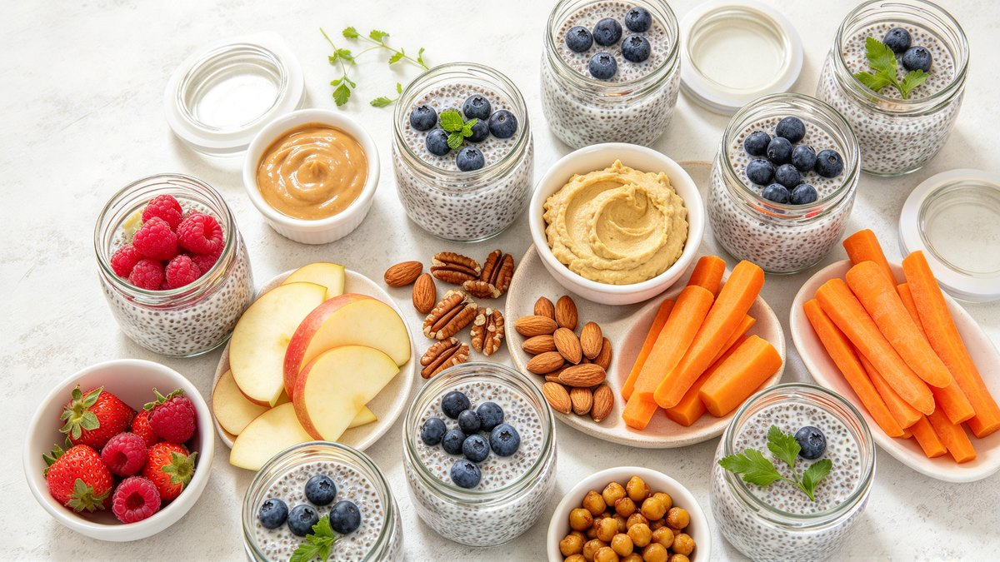

Ingredients
A List of 50 Super Healthy Foods
Our pillar guide: 50 evidence-backed super healthy foods grouped by food group, with portions and quick ways to use them in daily meals.
Healthy eating · Simple recipes · Evidence-based
EatWellStories turns nutrition research into practical lists, meal-prep lunches, filling snacks, family dinners and beginner diet guides — built for readers in the UK and the United States.
One authoritative list that links to every supporting topic on the blog.
Our pillar guide: 50 evidence-backed super healthy foods grouped by food group, with portions and quick ways to use them in daily meals.
Open the guideEight SEO-optimized articles covering ingredients, breakfasts, lunches, dinners, snacks and diet patterns.
Our pillar guide: 50 evidence-backed super healthy foods grouped by food group, with portions and quick ways to use them in daily meals.

Tomato nutrition, lycopene explained, raw versus cooked tomatoes, and simple ways to enjoy them in salads, sauces and soups.

Twelve nutrient-dense breakfast foods, from eggs and oats to Greek yoghurt, with quick combinations for a balanced morning plate.

Straightforward, healthier family dinners: traybakes, soups, stir-fries and bean dishes, with make-ahead tips to cut weeknight effort.
Egg nutrition facts, the evidence on cholesterol, boiled versus fried eggs, and quick ways to enjoy eggs for breakfast, lunch and snacks.

Twenty protein-plus-fibre snacks, from boiled eggs and fruit with nuts to yoghurt and veggie sticks, with work-ready swaps for cravings.

Fifteen prep-ahead work lunches: no-cook boxes, warm reheat bowls and plant-based options, plus a Sunday meal-prep system.

A beginner's Mediterranean diet guide: evidence-based benefits, the core food list, a simple 7-day starter plan and easy swaps.
Protein-rich, fibre-packed morning meals to start the day well.
Packable, prep-ahead lunches for work, school and busy days.
Quick, family-friendly dinners built around vegetables, beans and whole grains.
Filling, nutritious snacks that pair protein with fibre.
Nutrition deep-dives on common foods: what they contain and how to enjoy them.
Evidence-based guides to balanced eating patterns, starting with the Mediterranean diet.